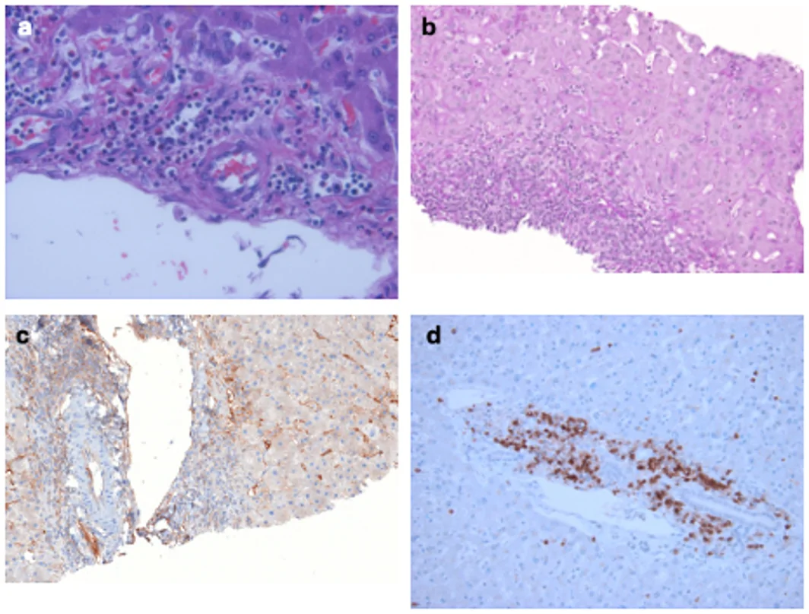
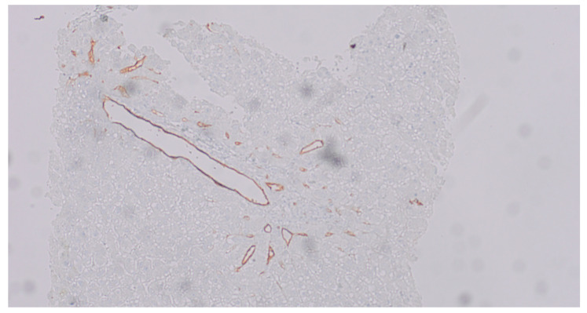
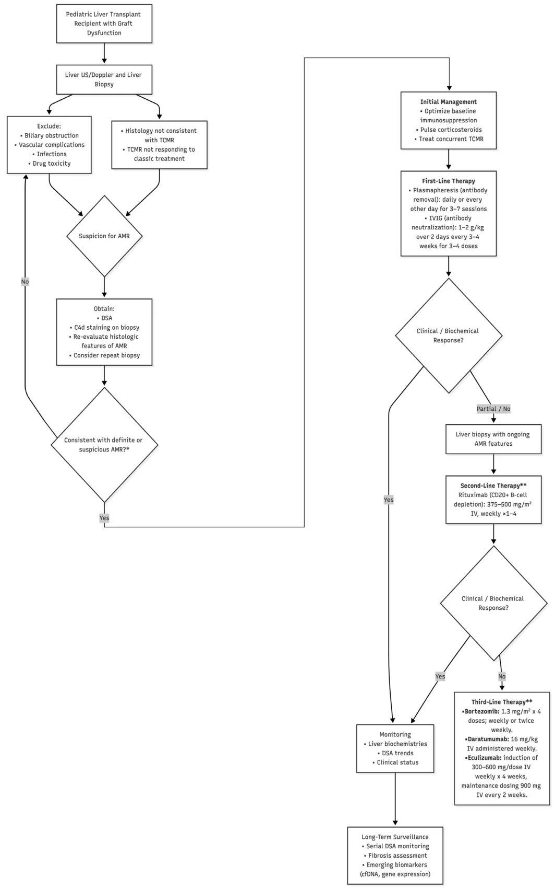
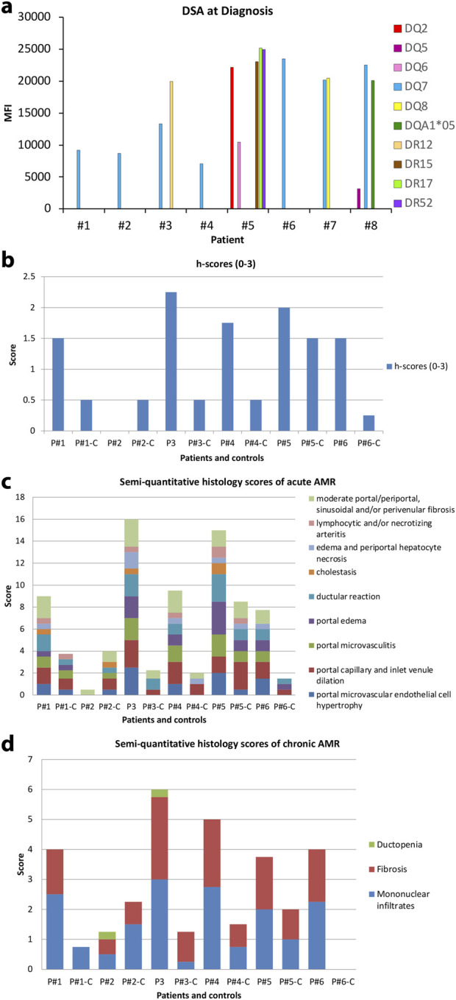
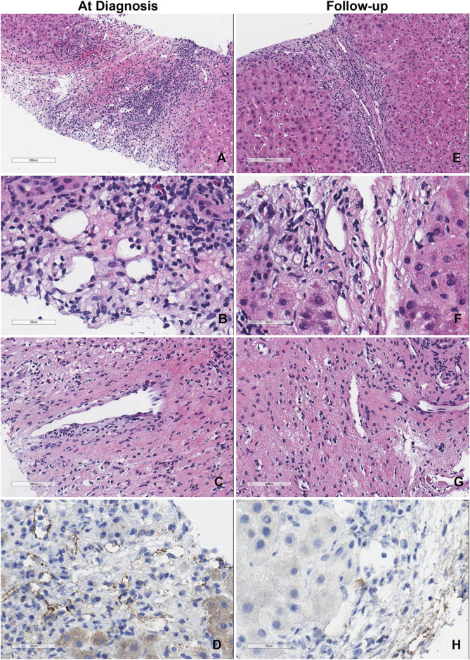

1917 — Thải ghép thể dịch (AMR) sau ghép gan: Banff 2016, C4d/h-score, DSA — và vì sao hình ảnh chỉ để LOẠI TRỪ / Antibody-mediated rejection after liver transplantation: Banff 2016, C4d and DSA, and why imaging only rules out
Tags: pattern:thai-ghep-the-dich pattern:thai-ghep-cap pattern:men-gan-tang pattern:giam-ngam pattern:hep-duong-mat pattern:gan-to pattern:viem-khoang-cua vung:gan vung:duong-mat vung:dong-mach-gan score:Banff-AMR score:C4d score:h-score score:MFI protocol:Doppler protocol:MRCP protocol:sinh-thiet-gan protocol:DSA
Mức chắc chắn (certainty): tổng hợp y văn (literature synthesis) — số liệu lấy từ các bài open-access đã đọc toàn văn: Jaramillo et al., Pediatr Transplant 2026 (PMC13552086, CC BY 4.0 — đồng thuận thực hành của Hội Ghép gan Nhi Hoa Kỳ: Banff 2016, bảng C4d/h-score, liều PLEX–IVIG–rituximab–bortezomib, thuật toán xử trí); Cicalese et al., Transpl Int 2024 (PMC11391112, CC BY 4.0 — 8 ca AMR người lớn, theo dõi 1–11 năm, tỉ lệ lui bệnh); Szymanska et al., J Clin Med 2026 (PMC13165025, CC BY 4.0 — 42 trẻ/62 sinh thiết, 7 trẻ AMR, phân bố C4d 1–3); Uebayashi et al., J Clin Med 2022 (PMC9409831, CC BY 4.0 — AMR mạn ở trẻ, 8–15% ở người có DSA dai dẳng); den Dulk et al., Transplant Direct 2015 (PMC4946454, CC BY-NC-ND 4.0 — MRCP + Leiden Biliary Stricture Classification, cutoff ≥ 3 điểm); Delgado-Moraleda et al., Insights Imaging 2019 (PMC6694376, CC BY 4.0 — bộ ba Dodd trên Doppler). Bài không có ca nguyên văn riêng của nhóm; ca 1–4 là ca nguyên văn/minh họa của các nguồn, ghi rõ Fig.
Câu hỏi gốc của bài: bệnh nhân ngày 12 sau ghép gan, ALT 180 U/L, bilirubin 2,6 mg/dL, tiểu cầu 78 × 10⁹/L; Doppler mạch gan và tĩnh mạch cửa bình thường, MRCP không hẹp miệng nối. DSA DQ7 MFI 12.000. Sinh thiết: C4d lan tỏa > 50% khoảng cửa, h-score 2, có viêm nội mạc tiểu tĩnh mạch. Vậy: đây là ACR hay AMR — và vì sao "siêu âm bình thường" không loại trừ được thải ghép? Điều trị PLEX + IVIG đủ chưa, khi nào thêm rituximab, và theo dõi bằng gì khi không có dấu hiệu hình ảnh nào để bám?
1. Tổng quan — vì sao AMR là chẩn đoán MIỄN DỊCH–MÔ HỌC, và vì sao ảnh không thể "thấy" nó
A. Bệnh học (pathology) và cơ chế:
- Định nghĩa: thải ghép thể dịch (antibody-mediated rejection, AMR) = tổn thương mảnh ghép do kháng thể kháng HLA của người cho (donor-specific antibody, DSA) gắn vào nội mạc vi mạch mảnh ghép → hoạt hóa bổ thể đường cổ điển (sinh C4d), ADCC và rối loạn chức năng nội mạc. Đích tổn thương là vi tuần hoàn khoảng cửa và xoang gan, không phải mô gan nói chung.
- Gan từng được coi là "miễn dịch đặc quyền" (immune-privileged): diện nội mạc xoang rất lớn hấp thụ kháng thể, HLA hòa tan trung hòa DSA, tế bào Kupffer dọn phức hợp miễn dịch, khả năng tái sinh mạnh (PMC13552086). Vì thế AMR hiếm hơn hẳn thận/tim: ước tính ~1% ở gan so với 10–30% ở tim và 20–50% ở thận (PMC9409831); thể cấp ở ghép ABO tương thích < 5% (PMC11391112). Nhưng hiếm không có nghĩa không có — đây chính là lý do chẩn đoán bị bỏ sót.
- Thời điểm: tối cấp (hyperacute) ngay khi tái tưới máu → hoại tử xuất huyết, huyết khối động mạch/tĩnh mạch cửa, mất chức năng mảnh ghép nguyên phát; cấp trong vài tuần (đôi khi ngay tuần đầu); mạn tiến triển tháng–năm, có thể âm thầm với men gan bình thường trong khi xơ hóa tiến triển (PMC13552086).
- Vì sao chẩn đoán cần 4 thành phần: Banff 2016 đòi hỏi (1) hình thái học phù hợp, (2) C4d, (3) DSA, (4) loại trừ nguyên nhân khác. Không thành phần nào một mình đủ — vì C4d dương cũng gặp trong thiếu máu–tái tưới máu, tắc mật, viêm gan, còn DSA đơn độc có thể không gây tổn thương (PMC13552086).
- Vì sao C4d là "dấu chân" của kháng thể: C4d là mảnh bền của C4 sau khi đường cổ điển bị hoạt hóa; nó gắn đồng hóa trị vào nội mạc/basement membrane nên tồn tại nhiều ngày sau khi kháng thể đã biến mất. Vì vậy C4d đánh dấu "đã từng có" kháng thể tại chỗ — không phải "đang có" kháng thể trong máu. Điểm mấu chốt: C4d lan tỏa (score 3, > 50% khoảng cửa) mới có giá trị; C4d từng ổ/yếu (score 1–2) không đặc hiệu.
- Vì sao h-score mô tả mức viêm vi mạch: tổn thương AMR là phì đại tế bào nội mạc, giãn mao mạch, viêm mao mạch với bạch cầu bám thành/lòng mạch. Banff chấm theo tỉ lệ khoảng cửa bị ảnh hưởng và số bạch cầu trong mao mạch bị ảnh hưởng nặng nhất: 3–4 bạch cầu = h1, 5–10 = h2, ≥ 10 = h3 (PMC13552086).
- Vì sao DSA là biến liên tục chứ không phải "dương/âm": xét nghiệm Luminex bead phủ kháng nguyên; MFI là tín hiệu huỳnh quang, phụ thuộc mật độ kháng nguyên trên hạt (cao hơn trên tế bào thật) và từng phòng xét nghiệm; ngưỡng dương thường 1.000–2.000 MFI. MFI > 1.000 đã tăng nguy cơ mất ghép; 97% người có MFI > 10.000 ở năm 1 vẫn dương ở năm 5 (50% giữ mức cao), trong khi 40% nhóm 1.000–4.999 giảm về âm ở năm 5 (PMC13552086).
- Vì sao AMR và TCMR thường đi cùng: nhánh tế bào T và nhánh kháng thể phối hợp; phần lớn sinh thiết AMR cũng có dấu hiệu TCMR (viêm nội mạc tĩnh mạch cửa, tổn thương ống mật). Vì thế TCMR không đáp ứng corticoid phải nghĩ AMR, và điều trị AMR mà bỏ TCMR (hoặc ngược lại) là sai lầm thường gặp (PMC13552086).
- Vì sao điều trị theo bậc: PLEX loại kháng thể lưu hành, IVIG trung hòa/điều hòa miễn dịch, corticoid giảm viêm; rituximab diệt tế bào B (nguồn tạo tương bào), bortezomib diệt tương bào, daratumumab diệt tương bào sống dài. Mỗi bậc nhắm một mắt xích khác nhau — vì vậy không có "một thuốc" cho AMR (PMC13552086).
B. Ngưỡng định lượng bắt buộc (cửa 1 Argon):
| Đại lượng | Con số đã kiểm chứng | Ý nghĩa thực hành |
|---|---|---|
| Tần suất AMR gan | ~1% (PMC9409831); cấp ở ABO tương thích < 5% (PMC11391112) | Hiếm nhưng không được bỏ; so sánh: tim 10–30%, thận 20–50% (PMC9409831) |
| AMR mạn ở trẻ có DSA | 8–15% ở người có DSA de novo hoặc dai dẳng (PMC9409831) | Nhóm DSA+ phải theo dõi dài hạn |
| DSA de novo ở trẻ | 76/346 (21,8%) trong 2 năm; 74/76 (97%) là class II, chủ yếu DQ (PMC13552086) | DSA class II/DQ là loại nguy hiểm nhất |
| Ngưỡng MFI | Phòng xét nghiệm dùng 1.000–2.000; MFI > 1.000 tăng nguy cơ mất ghép (PMC13552086) | Không dùng một ngưỡng chung cho mọi trung tâm |
| Độ bền DSA | 97% ca MFI > 10.000 ở năm 1 còn dương ở năm 5; 50% giữ cao; 40% ca 1.000–4.999 giảm về âm (PMC13552086) | MFI cao dai dẳng = nguy cơ tích lũy |
| C4d score | 0 không; 1 < 10% khoảng cửa; 2** 10–50%; 3 **> 50% khoảng cửa (PMC13552086) | Chỉ score 3 lan tỏa nằm trong tiêu chuẩn "chắc chắn" |
| h-score | 1 = 3–4 bạch cầu; 2 = 5–10; 3 = ≥ 10 bạch cầu trong mao mạch nặng nhất (PMC13552086) | Chấm cả tỉ lệ khoảng cửa và mức viêm |
| "Nghi ngờ AMR" | DSA dương + h-score khác 0 + tổng C4d+h = 3–4 (PMC13552086) | Chưa đủ "chắc chắn" — cân nhắc sinh thiết lại |
| "Không xác định" | Tổng C4d+h ≥ 2, kèm DSA hoặc C4d không có/không rõ, hoặc có tổn thương đồng thời (PMC13552086) | Không điều trị mù |
| AMR mạn "probable" | 4 tiêu chí, trong đó C4d ≥ 10% khoảng cửa và DSA trong 3 tháng quanh sinh thiết (PMC13552086) | Thể âm thầm, tiến triển xơ hóa |
| Thời gian khởi phát | Cấp: vài tuần; mạn: tháng–năm (PMC13552086) | Không chỉ theo dõi 3 tháng |
| PLEX | 1–1,5 thể tích huyết tương/lần × 3–7 lần, cách ngày (PMC13552086) | Thường cách ngày, không hàng ngày kéo dài |
| IVIG | 1–2 g/kg trong 2 ngày, mỗi 3–4 tuần × 3–4 liều (PMC13552086) | Cho sau khi kết thúc PLEX |
| Rituximab | 375 mg/m² (có nơi 500 mg/m²), chờ 48–72 giờ sau PLEX cuối (PMC13552086) | PLEX sẽ rửa trôi thuốc nếu cho quá sớm |
| Bortezomib | 1,3 mg/m² × 4 liều, tuần hoặc 2 lần/tuần; cho sau PLEX trong ngày điều trị (PMC13552086) | Bậc 3, ca kháng trị |
| Daratumumab | 16 mg/kg/tuần × 4 tuần (PMC13552086) | Cứu vãn, dữ liệu còn mỏng |
C. TẠI SAO ảnh trông như vậy (vật lý hình ảnh):
- Siêu âm B-mode: AMR không có dấu hiệu đặc hiệu; có thể gan to, nhu mô không đồng nhất do phù/viêm vi mạch, nhưng phù sau mổ, tắc mật, viêm gan, thiếu máu đều giống. B-mode bình thường không loại trừ AMR — đây là nguyên tắc trung tâm của bài.
- Doppler: AMR không có dấu hiệu Doppler đặc hiệu. Thay đổi nếu có là gián tiếp (sức cản nhu mô tăng → RI cao) và trùng lặp với phù mảnh ghép, tắc mật, chèn ép. Ngược lại, Doppler rất mạnh để loại trừ hẹp/tắc động mạch gan: bộ ba Dodd gồm PSV > 200 cm/s tại chỗ hẹp, RI < 0,5** và **SAT > 0,08 giây đoạn xa (PMC6694376). Lưu ý bẫy sinh lý: ~50% bệnh nhân có RI > 0,8 trong 3 ngày đầu, bình thường hóa ~ngày 4 (PMC6694376).
- MRCP: dùng để loại trừ hẹp/tắc đường mật — nguyên nhân cơ học hay bị nhầm nhất. Với Leiden Biliary Stricture Classification, cutoff ≥ 3 điểm phát hiện hẹp không miệng nối (NAS): Se > 90%, Sp 50–82%, PPV 86–91%, NPV 80–100%, tốt hơn ở đường mật trong gan; MRCP không đủ để chấm độ nặng (PMC4946454).
- CT: giá trị chính là loại trừ áp-xe, nhồi máu, huyết khối mạch, tụ dịch; không dùng để chẩn đoán AMR.
- Mô học + hóa mô miễn dịch: H&E thấy phì đại nội mạc, giãn mao mạch, viêm mao mạch; C4d IHC thấy dải nâu dọc nội mạc mao mạch khoảng cửa (khác C4d trong xoang — thường là dương tính giả/không đặc hiệu); CD3 cho thấy phần lớn tế bào viêm là T cell, giải thích vì sao AMR thường kèm TCMR (PMC13552086).

(a) H&E: lympho trong mao mạch khoảng cửa (viêm vi mạch), kèm bạch cầu ái toan rải rác. (b) PAS: làm rõ màng đáy mao mạch, viêm lan vào xoang quanh khoảng cửa. (c) C4d IHC: dải nâu dọc mao mạch khoảng cửa và màng đáy xoang quanh khoảng cửa — nội mạc tĩnh mạch cửa/động mạch gan cũng bắt màu nhưng ít đặc hiệu. (d) CD3: thâm nhiễm chủ yếu là T cell, có chỗ gây viêm tiểu tĩnh mạch — minh họa AMR thường đi kèm TCMR. Nguồn: Jaramillo et al., Pediatr Transplant 2026;30:e70455, PMC13552086 Fig. 1, CC BY 4.0.2. Mẫu hình + chẩn đoán phân biệt theo bối cảnh (Gamut)
Xếp theo cái gì phải loại trừ trước và bệnh cảnh nào dễ bị gọi nhầm:
- Mẫu A — AMR cấp sớm (vài tuần đầu), người nhận nhạy cảm/ABO không tương thích: men gan tăng, bilirubin tăng, giảm tiểu cầu không đáp ứng truyền, bổ thể giảm; DSA MFI cao; sinh thiết C4d lan tỏa + h-score ≥ 1. Đây là thể "chắc chắn" nếu đủ 4 tiêu chí.
- Mẫu B — TCMR không đáp ứng corticoid: hình thái giống TCMR nhưng men gan không giảm sau methylprednisolone; phải nhuộm C4d + làm DSA — phần lớn là AMR hỗn hợp.
- Mẫu C — AMR mạn: tiến triển tháng–năm, xơ hóa khoảng cửa/xoang, ống mật thoái hóa/ductopenia, hẹp đường mật không miệng nối, nhiều ổ, lan vào nhánh trong gan; C4d có thể chỉ từng ổ (> 10%); men gan có thể bình thường.
- Mẫu D — AMR giả dạng tắc xoang gan (SOS/VOD): viêm tiểu tĩnh mạch trung tâm, C4d xoang lan tỏa, DSA de novo, không có viêm vi mạch khoảng cửa điển hình — một thể đã được báo cáo, dễ bị chẩn đoán là SOS (PMC13552086).
- Mẫu E — DSA dương đơn độc, không rối loạn chức năng: không điều trị AMR; kiểm tra tuân thủ, lặp DSA cùng phòng xét nghiệm, theo dõi men gan; DSA có thể thoáng qua (PMC13552086).
- Mẫu F — AMR tối cấp: ngay sau tái tưới máu, hoại tử xuất huyết, huyết khối mạch, mất chức năng nguyên phát; chẩn đoán trên gan cắt bỏ/tử thiết, xử trí ghép lại.
- Mẫu G — viêm gan tự miễn de novo (dn AIH)/"plasma cell rejection": ở trẻ ghép vì bệnh khác, xuất hiện AIH-like; có thể chồng lấp AMR mạn; cần IgG, autoantibody, mô học (PMC13552086).
- Mẫu H — nguyên nhân cơ học/nhiễm (phải loại trừ TRƯỚC): hẹp/tắc động mạch gan (HAT/HAS), hẹp miệng nối mật, cholangiopathy thiếu máu, áp-xe/sepssis, thuốc (DILI), CMV/EBV/PTLD, tái phát PSC/AIH.
3. Bảng so sánh phân biệt (ma trận đối chiếu)
| Thực thể (entity) | Hình ảnh điển hình | Chốt vào (rule-in) | Chốt loại (rule-out) | Gợi ý xác nhận |
|---|---|---|---|---|
| AMR cấp chắc chắn | Siêu âm/Doppler thường bình thường hoặc không đặc hiệu; MRCP không hẹp | Đủ 4 tiêu chí Banff: hình thái + C4d score 3 + DSA dương + loại trừ nguyên nhân khác | C4d âm + không có viêm vi mạch → không AMR | C4d IHC, h-score, DSA; sinh thiết |
| AMR "nghi ngờ" | Không đặc hiệu | DSA dương + h ≠ 0 + tổng C4d+h = 3–4 | Hình thái không có viêm vi mạch và C4d âm → không | Sinh thiết lại 1–2 tuần; DSA lặp |
| AMR + TCMR hỗn hợp | Như AMR; có thể giãn mật nhẹ do tổn thương ống mật | C4d dương + viêm nội mạc tĩnh mạch cửa/tổn thương ống mật | Chỉ TCMR thuần và C4d âm, DSA âm → không AMR | Điều trị cả hai; corticoid/ATG + PLEX |
| AMR mạn (probable) | Xơ hóa khoảng cửa/xoang; MRCP: hẹp nhiều ổ, gần gốc, lan trong gan; gan teo/không đồng nhất | 4 tiêu chí, gồm C4d ≥ 10% khoảng cửa + DSA trong 3 tháng | Không xơ hóa, không DSA, C4d âm → không | Sinh thiết + MRCP; theo dõi xơ hóa |
| TCMR đơn thuần | Bình thường hoặc gan to nhẹ; RI tăng muộn không đặc hiệu | RAI/PI+BDD+VEI trên mô học, C4d âm, DSA âm | C4d lan tỏa + DSA dương → nghĩ AMR | Banff RAI (bài 1916) |
| HAT/HAS | Mất dòng/PSV > 200 cm/s, RI < 0,5, SAT > 0,08 giây; CTA hẹp/tắc | Bất thường Doppler + CTA/DSA | Mạch thông, RI bình thường | Doppler–CEUS–CTA (bài 1913/1915) |
| Hẹp miệng nối mật | Giãn đường mật trong gan + hẹp đúng miệng nối | MRCP/ERCP thấy hẹp tại miệng nối | MRCP bình thường | MRCP/ERCP (bài 133) |
| Cholangiopathy thiếu máu/NAS | Hẹp nhiều ổ trong gan, không đúng miệng nối; tiền sử HAT/kéo dài thiếu máu lạnh | LBSC ≥ 3 điểm trên MRCP + bối cảnh mạch máu | MRCP bình thường | MRCP; đối chiếu mạch gan |
| Tái phát PSC/AIH | PSC: hẹp nhiều ổ + giãn; AIH: không đặc hiệu | MRCP/autoantibody/IgG + mô học | Không có dấu hiệu tái phát | MRCP, IgG/autoantibody |
| DILI | Không đặc hiệu | Thuốc mới + thời gian hợp lý + eosinophil/autoantibody | Không liên quan thuốc | Ngừng thuốc thử; sinh thiết |
| Nhiễm CMV/EBV, PTLD | CMV: không đặc hiệu; PTLD: khối khoảng cửa/hạch | PCR/pp65 dương; PTLD có tăng sinh lympho đơn dòng | PCR âm, không khối | PCR, sinh thiết, PET/CT |

C4d IHC, độ phóng đại ×10: dải nâu dọc nội mạch tĩnh mạch cửa và mao mạch khoảng cửa, không thành dải trong xoang. Đây là C4d score 3 (lan tỏa > 50% khoảng cửa) — thành phần bắt buộc để gọi "AMR chắc chắn" theo Banff 2016. Nguồn: Szymanska et al., J Clin Med 2026;15:3554, PMC13165025 Fig. 2, CC BY 4.0.4. Protocol chẩn đoán + phân độ Banff + ngưỡng điều trị
A. Thứ tự bắt buộc khi mảnh ghép rối loạn chức năng:
- Sinh hóa + huyết học: AST/ALT/ALP/GGT/bilirubin, INR, tiểu cầu, bổ thể (C3/C4) — AMR cấp hay có giảm tiểu cầu và bổ thể thấp (PMC13552086).
- Siêu âm + Doppler (+ CEUS): loại trừ HAT/HAS, tắc tĩnh mạch cửa, hẹp dòng ra; ghi RI trong gan, PSV tại miệng nối, SAT. Nhớ RI > 0,8 trong 72 giờ đầu là sinh lý ở ~50% (PMC6694376).
- MRCP: loại trừ hẹp miệng nối và NAS; dùng LBSC ≥ 3 điểm để phát hiện NAS (Se > 90%), nhưng không chấm độ nặng bằng MRCP (PMC4946454).
- CT bụng có cản quang: khi nghi áp-xe, nhồi máu, huyết khối, tụ dịch — không để chẩn đoán AMR.
- DSA (Luminex): làm trước khi bắt đầu điều trị kháng thể, lặp gần cuối đợt, rồi mỗi 1–3 tháng đến khi ổn định, sau đó 3–6 tháng trong năm đầu (PMC13552086).
- Sinh thiết gan + C4d IHC + h-score: bắt buộc để phân loại Banff; sinh thiết lại nếu mô học không khớp hoặc không đáp ứng điều trị.
- Loại trừ nhiễm: CMV/EBV PCR, cấy máu/mật khi sốt; PTLD khi có khối.
B. Banff 2016 — phân loại AMR cấp:
| Nhóm chẩn đoán | Tiêu chí bắt buộc |
|---|---|
| AMR cấp chắc chắn (definite) | (1) Hình thái phù hợp (phì đại nội mạc vi mạch, giãn mao mạch, viêm mao mạch, phù khoảng cửa, phản ứng ống mật, ứ mật) + (2) DSA huyết thanh dương + (3) C4d lan tỏa — score 3 (ở ghép ABO không tương thích: C4d mô đệm khoảng cửa) + (4) loại trừ hợp lý nguyên nhân khác |
| Nghi ngờ AMR (suspicious) | DSA dương + h-score khác 0 + tổng C4d + h = 3–4 |
| Không xác định (indeterminate) | Tổng C4d + h ≥ 2, kèm DSA không có/không rõ hoặc C4d không có/không rõ, hoặc có tổn thương đồng thời |
C. Chấm điểm thành phần (bắt buộc ghi cả hai):
| Điểm | C4d (miễn dịch) | h (mô học) |
|---|---|---|
| 0 | Không có C4d ở vi mạch khoảng cửa | Không có dấu hiệu AMR |
| 1 | < 10%** khoảng cửa có C4d ở **> 50% chu vi nội mạc | Phì đại nội mạc ở phần lớn khoảng cửa + 3–4 bạch cầu bám/lòng mao mạch nặng nhất; giãn nhẹ |
| 2 | 10–50% khoảng cửa; thường không lan vào xoang | 5–10 bạch cầu; phì đại rõ ở phần lớn khoảng cửa/xoang; giãn mao mạch rõ; có thể phù khoảng cửa |
| 3 | > 50% khoảng cửa; thường lan vào tiểu tĩnh mạch vào/xoang quanh cửa | ≥ 10 bạch cầu; giãn mao mạch rõ; ít nhất từng ổ mất liên tục vi mạch + fibrin + hồng cầu ngoài mạch |
D. AMR mạn — "probable chronic" (cả 4): (1) viêm đơn nhân khoảng cửa/quanh tiểu tĩnh mạch không giải thích được + xơ hóa ít nhất vừa khoảng cửa/quanh xoang/quanh tiểu tĩnh mạch; (2) C4d ≥ 10% nội mạc vi mạch khoảng cửa; (3) DSA trong 3 tháng quanh sinh thiết; (4) loại trừ nguyên nhân khác. "Possible" khi C4d tối thiểu hoặc không có (PMC13552086).
E. Ngưỡng điều trị (bậc thang):
| Bước | Can thiệp | Liều / thời gian |
|---|---|---|
| 0 — nền | Tối ưu ức chế miễn dịch + corticoid xung; điều trị TCMR đi kèm | Theo phác đồ trung tâm |
| 1 — đầu tay | PLEX + IVIG | PLEX 1–1,5 thể tích huyết tương × 3–7 lần, cách ngày; IVIG 1–2 g/kg trong 2 ngày, mỗi 3–4 tuần × 3–4 liều (sau PLEX) |
| 2 — không/đáp ứng một phần | Rituximab | 375 mg/m² (có nơi 500 mg/m²), chờ 48–72 giờ sau PLEX cuối |
| 3 — kháng trị | Bortezomib; daratumumab | Bortezomib 1,3 mg/m² × 4; daratumumab 16 mg/kg/tuần × 4 |
| Theo dõi | Men gan, DSA, xơ hóa, biomarker mới (cfDNA) | DSA 1–3 tháng đến khi ổn định; sau đó 3–6 tháng/năm đầu |
F. Sơ đồ quyết định:
flowchart TD
A[Manh ghep roi loan chuc nang] --> B[Sie u am Doppler va CEUS]
B --> C[Loai tru tac nghen mat bang MRCP]
C --> D{Con nguyen nhan co hoc}
D -->|Co| E[Dieu tri nguyen nhan mach hoac mat]
D -->|Khong| F[Sinh thiet gan va nhuom C4d]
F --> G[Lam DSA va cham h-score]
G --> H{Du 4 tieu chi Banff}
H -->|Co| I[AMR chac chan]
H -->|DSA duong va tong C4d+h 3-4| J[AMR nghi ngo]
H -->|Khong| K[Xem lai TCMR nhiem thuoc hoac tai phat benh]
I --> L[Toi uu uc che mien dich va corticoid xung]
J --> L
L --> M[PLEX cong IVIG]
M --> N{Dap ung lam sang va sinh hoa}
N -->|Co| O[Theo doi DSA va xo hoa]
N -->|Khong| P[Rituximab]
P --> Q{Dap ung}
Q -->|Khong| R[Bortezomib hoac daratumumab]
Q -->|Co| O

Thuật toán của nhóm đồng thuận: bước đầu siêu âm/Doppler + sinh thiết, loại trừ tắc mật, biến chứng mạch, nhiễm, độc thuốc; nếu nghi AMR → DSA + C4d + đánh giá lại mô học, cân nhắc sinh thiết lại; điều trị PLEX + IVIG, sau đó rituximab, rồi bortezomib/daratumumab nếu không đáp ứng. Nguồn: Jaramillo et al., Pediatr Transplant 2026;30:e70455, PMC13552086 Fig. 3, CC BY 4.0.5. Biến thể bình thường và cạm bẫy
A. Biến thể bình thường (normal variant):
- RI > 0,8 trong 3 ngày đầu sau ghép ở ~50% do phù mảnh ghép, bình thường hóa ~ngày 4 — không phải AMR (PMC6694376).
- C4d dương nhẹ/từng ổ sau thiếu máu–tái tưới máu, tắc mật, viêm gan — không đủ chẩn đoán.
- DSA MFI thấp, thoáng qua (đặc biệt 1.000–5.000) có thể tự giảm; 40% nhóm này âm ở năm 5 (PMC13552086).
- Giãn nhẹ đường mật trong gan sau ghép do phù miệng nối — đối chiếu MRCP và men gan, không quy ngay cho AMR.
- Gan to, nhu mô không đồng nhất trong vài tuần đầu do tái tưới máu — tự hết.
B. Cạm bẫy (pitfall):
- "Siêu âm bình thường nên không phải thải ghép": sai — AMR không có dấu hiệu hình ảnh đặc hiệu; ảnh chỉ loại trừ cơ học.
- Gọi AMR khi chỉ có C4d dương: C4d score 1–2 gặp trong nhiều bệnh cảnh; phải có DSA + hình thái và loại trừ.
- Bỏ sót C4d âm: AMR C4d âm đã được thừa nhận ở thận và có thể gặp ở gan; đừng loại trừ chỉ vì C4d âm khi DSA + viêm vi mạch rõ (PMC13552086).
- Điều trị DSA dương đơn độc: không có rối loạn chức năng/mô học → theo dõi, tránh PLEX/IVIG không cần thiết.
- Bỏ TCMR đi kèm: phần lớn sinh thiết AMR có TCMR; chỉ điều trị kháng thể mà không corticoid/ATG sẽ không cải thiện men gan (PMC13552086).
- Cho rituximab ngay sau PLEX: PLEX rửa trôi thuốc; phải chờ 48–72 giờ (PMC13552086).
- Quên AMR mạn: men gan bình thường nhưng xơ hóa tiến triển; hẹp nhiều ổ, gần gốc, lan trong gan khác hẹp miệng nối — dễ bị gọi là "TCMR muộn" hoặc "xơ hóa không rõ nguyên nhân".
- Nhầm hẹp do miễn dịch với hẹp do thiếu máu: cả hai đều hẹp không miệng nối; phải đối chiếu tiền sử HAT/thiếu máu lạnh và mạch gan.
- Sinh thiết một lần là đủ: sampling error và interobserver; nếu mô học không khớp lâm sàng, sinh thiết lại.
- Satisfaction of search: thấy AMR rồi không đọc mạch–mật; bệnh nhân có thể có cả AMR và hẹp động mạch/mật.
6. Tự lượng giá — Blind Quiz
Ca 1 — 8 bệnh nhân AMR: đọc DSA và h-score.

- Hỏi: (1) MFI nào được coi là "cao"? (2) 7/8 ca đạt Banff — nghĩa là gì? (3) h-score 0,5 có loại trừ AMR không?
Bấm để hiện đáp án (findings + chẩn đoán)
- (1) Ngưỡng dương 1.000–2.000 MFI tùy phòng xét nghiệm; > 1.000 đã tăng nguy cơ mất ghép; phần lớn ca trong hình có MFI 5.000–25.000 (DQ2, DQ7, DQ8, DQA1*05...).
- (2) 7/8 ca đủ 4 tiêu chí Banff 2016 → AMR chắc chắn; 1 ca h-score thấp/không điển hình vẫn được chẩn đoán nhờ DSA + C4d + bối cảnh.
- (3) Không — h-score 0,5 chỉ là mức viêm thấp, không loại trừ; phải đọc cùng C4d và DSA. Trong hình, nhiều ca h-score 0,5–1,5 vẫn là AMR.
- Nguồn: Cicalese et al., Transpl Int 2024;37:13232, PMC11391112 Fig. 1, CC BY 4.0.
Ca 2 — Sinh thiết có dải nâu dọc mao mạch khoảng cửa.
- Hỏi: (1) Đây là C4d score mấy? (2) C4d nằm ở đâu mới đặc hiệu? (3) Có C4d này đã đủ chẩn đoán AMR chưa?
Bấm để hiện đáp án
- (1) Score 3 — lan tỏa > 50% khoảng cửa, dọc nội mạc tĩnh mạch cửa và mao mạch.
- (2) Vi mạch khoảng cửa (mao mạch, tiểu tĩnh mạch vào); C4d trong xoang hoặc trên tĩnh mạch lớn/ống mật quanh rốn gan ít đặc hiệu.
- (3) Chưa — cần DSA + hình thái + loại trừ; C4d đơn độc có thể dương trong thiếu máu–tái tưới máu/tắc mật/viêm gan.
- Nguồn: Szymanska et al., J Clin Med 2026;15:3554, PMC13165025 Fig. 2, CC BY 4.0.
Ca 3 — Sinh thiết lúc chẩn đoán và sau 6 tháng.

- Hỏi: (1) Khung trái cho thấy gì? (2) Khung phải thay đổi ra sao? (3) Điều này nói gì về tiên lượng?
Bấm để hiện đáp án
- (1) Viêm vi mạch khoảng cửa với phì đại nội mạc, giãn mao mạch, bạch cầu bám thành, kèm C4d dương (D) — mô học AMR cấp điển hình.
- (2) Sau 6 tháng điều trị: viêm giảm rõ, kiến trúc khoảng cửa hồi phục, C4d giảm (H) — phù hợp lui bệnh.
- (3) Trong loạt 8 ca, 5/8 lui hoàn toàn, 1 chuyển AMR mạn, 2 phải ghép lại → điều trị sớm có thể đảo ngược, nhưng không phải tất cả.
- Nguồn: Cicalese et al., Transpl Int 2024;37:13232, PMC11391112 Fig. 2, CC BY 4.0.
Ca 4 — Bệnh nhân rối loạn chức năng mảnh ghép: chọn bước tiếp theo.
- Hỏi: (1) Hai việc phải làm ngay? (2) Khi nào gọi "nghi ngờ AMR"? (3) Vì sao phải chờ 48–72 giờ sau PLEX mới cho rituximab?
Bấm để hiện đáp án
- (1) Siêu âm/Doppler + sinh thiết gan, đồng thời loại trừ tắc mật, biến chứng mạch, nhiễm, độc thuốc.
- (2) DSA dương + h-score khác 0 + tổng C4d+h = 3–4; nếu chưa đủ, lặp DSA/C4d và cân nhắc sinh thiết lại.
- (3) PLEX loại bỏ kháng thể và cả thuốc khỏi huyết tương; cho rituximab quá sớm sẽ mất liều — chờ 48–72 giờ sau phiên PLEX cuối.
- Nguồn: Jaramillo et al., Pediatr Transplant 2026;30:e70455, PMC13552086 Fig. 3, CC BY 4.0.
Bài liên quan chéo
- 1916 – Thải ghép cấp tế bào (ACR/TCMR) sau ghép gan — đối thủ số 1 của AMR; C4d âm, DSA âm, đáp ứng corticoid; AMR thường đi kèm.
- 1913 – Hẹp & huyết khối động mạch gan sau ghép — loại trừ mạch trước khi gọi AMR; bộ ba Dodd.
- 1915 – Hẹp động mạch gan ở trẻ sau ghép — ngưỡng Doppler theo tuổi ở trẻ.
- 133 – Hẹp miệng nối & cholangiopathy thiếu máu sau ghép gan — hẹp mật bắt chước AMR mạn.
- 1909 – Hẹp–tắc tĩnh mạch cửa sau ghép gan — men gan tăng + gan to, phải loại trừ trước.
- 1906 – Hẹp dòng ra tĩnh mạch gan sau ghép (HVOO) — ứ huyết gây rối loạn chức năng, không phải AMR.
- 1914 – Suy chức năng mảnh ghép sớm (EAD) & PNF — PNF là biểu hiện của AMR tối cấp.
Ảnh
- 5 ảnh, tải từ PMC CDN của bài open access (CC BY 4.0), không chỉnh sửa pixel; nguồn + giấy phép từng file trong
images/CREDITS.md. - Tên file:
1917_amr_<nội dung>_<Modality>_PMCxxxxx-fN.(jpg|webp); không tạo ảnh ghép (H&E/PAS, IHC, biểu đồ Luminex và thuật toán — khác modality, không cùng chuỗi xung). - Ảnh không tải: Radiopaedia (chỉ dẫn link), AuntMinnie (chỉ dẫn link), các bài không rõ giấy phép — xem
sources.md.
Không dùng để chẩn đoán độc lập khi chưa có người hướng dẫn.